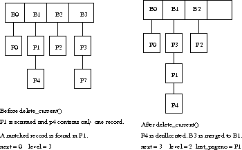
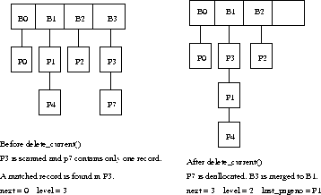

Since the position of the record to be deleted is known, we can just move the last record on the last page to the current slot and decrement current_slotno by 1. If an overflow page is deallocated because of the deletion, a merge is triggered. If the bucket to be merged (the last bucket) is neither the bucket we are scanning nor its image, then the normal merge operation described previously can be used here without any modification. Otherwise, if we still use the same merge operation, the values of current_pageno and current_slotno could be changed due to records movement. In order to minimize the cost and complexity, we designed a special scheme which is illustrated in the following two cases:

Figure: Case 1 in delete_current()

Figure: Case 2 in delete_current()
Note that after these operations, all bucket pages are still compact. Besides, the vales of current_pageno and current_slotno are unchanged. One drawback of this scheme is that the continuing scan after the merge will then scan all the pages concatenated to the last page of the scanned bucket where no matched records can be found since they belonged to the image bucket of the scanned bucket before the merge. In order to improve the performance, we set a member of the LinearHashingScan object, last_pageno, to the PageId of the first page concatenated to the scanned bucket. When the scan reads this page, it knows that it's the end of the scan and NOMORERECS is returned. (See Figure 2 and Figure 3.) The above reasoning is based on the fact that when a scan is opened, no update operation is allowed except delete_current().